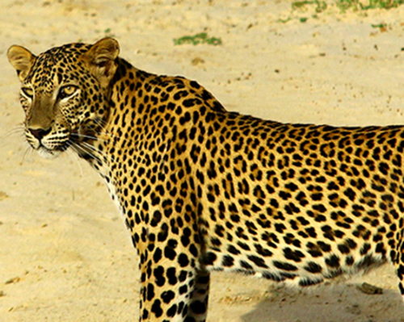

Most Attrative Mammals
Sri Lankan Leopard
The Leopard (Panthera pardus, Linnaeus, 1758) is the most secretive and elusive of the large carnivores, and also the shrewdest. Pound for pound, it is the strongest climber of the larger cats and is capable of killing prey far larger than itself. However, the leopard is the smallest member of the genus Panthera, which includes the Lion, Tiger and Jaguar. Historically, the leopard had a wide distribution across eastern and southern Asia and Africa, from Siberia to South Africa, with fragmented populations in the Indian subcontinent, Sri Lanka, Indochina, Malaysia, Indonesia and China. Sadly, the range has decreased radically due to over hunting and loss of habitat.
Main source

Asian Elephant
The Asian elephant is the largest land animal inhabiting the Asian Continent. Its young are nourished with milk and therefore they are classified as mammals. The adults of the species are herbivorous. The average lifespan of an elephant is approximately 60 years with the oldest on record being 80 years. Elephants also have the longest gestation period of all animals with conception to birth taking 22 months. Elephants by nature are social animals, with females and young living in herds.
Main source